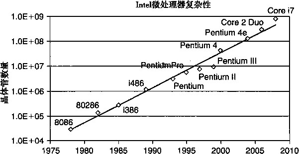
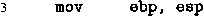

练习题2.48 十六进制 0x359141 等价于二进制[1101011001000101000001]。将之右移21位得到 1.101011001000101000001 2 X2? l o除去起始位的1并增加2个0形成小数域，从而得到[101011001000101_100]。阶码是通过
21加上偏置量127形成的，得到148 (二进制[10010100])。我们把它和符号字段0联合起来，得到二进制表示
[01001010010101100100010100000100]
我们看到两种表示中匹配的位对应于整数的低位到最高有效位等于1,匹配小数的高21位••
00359141 00000000001101011001000101000001 本本幸本本本本本本本本氺本本本本本本氺 9| (本
4A56450 4
01001010010101100100010100000100
练习题2.49这个练习帮助你思考什么数不能用浮点准确表示。
这个数的二进制表示是：1后面跟着《个0,其后再跟1,得到的值是2W + 1。 B•当《 = 23 时，值是 2 24 + 1 = 16 777 217。
练习题2.50人工舍入帮助你强化二进制数舍入到偶数的概念。
原始值 |
舍入后的值 |
|
10.010 2 |
10.0 2 |
|
10.011 2 |
2i |
10.1 2| |
10.1102 |
11.0 3 |
|
11.0012 |
3 l |
11.0 3 |
练习题 2.51
从1/10的无穷序列中我们可以看到，舍入位置右边2位都是1,所以1/10更好一点儿的近似值应 该是对 X 加 1,得到 x’ = 0.00011001100110011001101 2 ,它比 0.1 大一点儿。
我们可以看到x•—0.1的二进制表示为：
0 . 0000000000000000000 [ 1100 ]
将这个值与1/10的二进制表示比较，我们可以看到它等于Z^Xl/lO,大约等于2.38XHT 8 。
2.38X10 _8 X 100X60X60X10«0.086秒，爱国者导弹系统中的误差是它的4倍。
0.086X2000« 171 米。
练习题 2.52这个题目考查了很多有关浮点表示的概念，包括规格化和非规格化的值的编码，以及舍入。
格式 A |
格式 B |
注 |
位 值 |
位 值 |
|
011 0000 1 101 1110 ^ 010 1001 H 110 1111 f 000 0001 ^ |
0111 000 1 1001 111 ^ 0110 100 | 1011 000 16 0001 000 ^ |
向上舍入 向下舍入 Denorm norm |
练习题 2.53 —般来说，使用库宏（librarymacro)会比你自己写的代码更好一些。然而这段代码似乎可以 在多种机器上工作。
假设值1曰400溢出为无穷。
#define P0S_INFINITY le400 #define NEG_INFINITY (-POS.INFINITY)
#define NEG.ZERO (-1.0/P0S_INFINITY)
练习题 2.54这个练习可以帮助你从程序员的角度来提高研究浮点运算的能力。确信自己理解下面每一个答案。
x==(int) (double)x
真，因为double类型比int类型具有更大的精度和范围。
x==(int) (float) x 假，例如当x为TMax时。
d== (double) (float) d
假，例如当d为le40时，右边得到+ 00。
f== (float) (double) f
真，因为double类型比float类型具有更大的精度和范围。
f==- (-f)
真，因为浮点数取非就是简单地对它的符号位取反。
1.0/2==1/2.0
真，在执行除法之前，分子和分母都会被转换成浮点表示。
d*d>=0.0
真，虽然它可能会溢出到+ ~。
(f+d)-f==d
假，例如当f是1.0e20而d是1.0时，表达式f+d会舍入到1.0e20,因此左边的表达式求值得 到0.0,而右边是1.0。
|第3章|
I Computer Systems ： A Programmer J s Perspective, 2E
程序的机器级表不
计算机执行机器代码，用字节序列编码低级的操作，包括处理数据、管理存储器、读写存储 设备上的数据，以及利用网络通信。编译器基于编程语言的原则、目标机器的指令集和操作系统 遵循的规则，经一系列的阶段产生机器代码。GCCC语言编译器以汇编代码的形式产生输出， 汇编代码是机器代码的文本表示，给出程序中的每一条指令。然后GCC调用汇编器和链接器， 从而根据汇编代码生成可执行的机器代码。在本章中，我们会近距离地观察机器代码，以及人类 可读的表示——汇编代码。
当我们用高级语言编程的时候（例如C语言，Java语言更是如此)，机器屏蔽了程序的细节, 即机器级的实现。与此相反，当用汇编代码编程的时候（就像早期的计算)，程序员必须指定程 序的低级指令以执行计算。高级语言提供的抽象级别比较高，大多数时候,在这种抽象级别上工 作效率会更高，也更可靠。编译器提供的类型检查能帮助我们发现许多程序错误，并能够保证按 照一致的方式来引用和处理数据。通常情况下，现代的优化编译器产生的代码至少与一个熟练的 汇编语言程序员手工编写的代码一样有效。最大的优点是，用高级语言编写的程序可以在很多不 同的机器上编译和执行，而汇编代码则是与特定机器密切相关的。
那么为什么我们还要花时间学习机器代码昵？即使编译器承担了产生汇编代码的大部分工 作，对于严谨的程序员来说，能够阅读和理解汇编代码仍是一项很重要的技能。以适当的命令行 选项调用编译器，编译器就会产生一个以汇编代码形式表示的输出文件。通过阅读这些汇编代 码，我们能够理解编译器的优化能力，并分析代码中隐含的低效率。就像我们将在第5章中体会 到的那样，试图最大化一段关键代码的性能的程序员，通常会尝试源代码的各种形式，每次编译 并检查产生的汇编代码，从而了解程序将要运行的效率如何。此外，也有些时候，高级语言提供 的抽象层会隐藏我们想要了解的有关程序运行时行为的信息。例如，第12章会讲到，当用线程 包写并发程序时，知道存储器保存不同的程序变量的区域是很重要的。这些信息在汇编代码级是 可见的。另外再举一个例子，程序遭受攻击（使得螺虫和病毒能够侵扰系统）的许多方式中，都 涉及程序存储运行时控制信息方式的细节。许多攻击利用了系统程序中的漏洞重写信息，从而获 得系统的控制权。了解这些漏洞是如何出现的以及如何防御它们，需要具备程序机器级表示的知 识。程序员学习汇编代码的需求随着时间的推移也发生了变化，开始时只要求程序员能直接用汇 编语言编写程序，现在则是要求他们能够阅读和理解编译器产生的代码。
在本章中，我们将详细学习两种特别的汇编语言，了解如何将C程序编译成这些形式的机 器代码。阅读编译器产生的汇编代码，需要具备的技能不同于手工编写汇编代码。我们必须了 解典型的编译器在将C程序结构变换成机器代码时所做的转换。相对于C代码表示的计算操作， 优化编译器能够重新排列执行顺序，消除不必要的计算，用快速操作替换慢速操作，甚至将递归 计算变换成迭代计算。源代码与对应的汇编码的关系通常不太容易理解——就像要拼出的拼图与 盒子上图片的设计有点不太一样。这是一种逆向工程（reverse engineering) -■一通过研究系统和 逆向工作，来试图了解系统的创建过程。在这里，系统是一个机器产生的汇编语言程序，而不是 由人设计的某个东西。这简化了逆向工程的任务，因为产生的代码遵循比较规则的模式，而且我 们可以做试验，让编译器产生许多不同程序的代码。本章提供了许多示例和大量的练习，来说明 汇编语言和编译器的各个不同的方面。精通细节是理解更深和更基本概念的先决条件。有人说： “我理解了一般规则，不愿意劳神去学习细节！ ”他们实际上是在自欺欺人。花时间研究这些示
例、完成练习并对照提供的答案来检査你的答案，是非常关键的。
本章基于两种相关的机器语言：Intel IA32和x86-64。前者是当今大多数计算机的主导语言， 而后者是前者在64位机器上运行的扩展。我们先从IA32开始。Intel处理器是在1978年从简单 的16位处理器发展起来的，现在已经成为桌面计算机、笔记本电脑和服务器计算机的主流处理 器。其体系结构也在相应地发展，加入新特性后，它从16位体系结构转变成了支持32位数据和 地址的IA32。IA32看起来是一个相当奇怪的设计，有些特性只有从历史的角度来看才有意义。 它还具有提供后向兼容性的特性，而现代编译器和操作系统根本不使用这些特性。我们将关注 GCC和Linux使用的那些特性，这样可以避兔许多IA32的复杂性和隐秘特性。
我们在技术讲解乏前，先快速浏览匚语鲁、汇编代码以及机器代码之间的关系。然后介绍 IA32的细节，从数据的表示和处理以及控制的实现开始。了解C语言中的控制结构（如if、 while和switch语句）是如何实现的。然后，我们会讲到过程的实现，包括程序如何维护一 个运行栈来支持过程间数据和控制的传递，以及局部变量的存储。接下来，我们会考虑在机器级 如何实现像数组、结构和联合这样的数据结构。有了这些机器级编程的背景知识，我们就能够解 决存储器访问越界的问题，以及系统容易遭受缓冲区溢出攻击的问题。在这一部分的结尾，我们 会给出一些用GDB调试器检査机器级程序运行时行为的技巧。
正如我们会讨论的那样，将IA32扩展到64位，称为X86-64,最初是由Intel的最大竞争 者——Advanced Micro Devices (AMD)开发出来的。32位机器只能使用大概4GB (2 32 字节） 的随机访问存储器（译者注：即内存)，而目前的64位机器能够使用多达256TB (2 48 字节）的 内存空间。计算机产业正处在从32位机到64位机过渡的阶段。大多数较新的服务器和桌面机以 及许多笔记本电脑的微处理器，都支持32位或者64位运算。然而，运行在这些机器上的操作系 统，大多数都只支持32位的应用，因此，硬件的能力没有被充分利用。随着存储器价格的下降， 以及执行大规模数据集应用需求的上升，64位机器和应用会变得越来越普遍。因此，近距离地 看一看X86-64是非常必要的。我们会看到在实现32位到64位的转变中，AMD的工程师加入了 一些特性，有的使机器对优化编译器来说是更好的目标机器，还有的提高了系统性能。
我们提供了网络旁注，里面包含一些专门针对机器语言爱好者的内容。其中一个内容，仔细 检查了釆用高级别优化编译生成的代码。GCC编译器的每个新版本都比前一版本实现了更精密 的优化算法,极大地改变了程序的面貌，以至于很难辨认初始源代码与生成的机器级程序之间 的关系。另一个网络旁注简要描述了在C语言程序中嵌入汇编代码的一些方法。在一些应用中， 程序员必须甩汇编代码来访问机器的低级特性。一种方法是，整个函数都用汇编代码来写，然后 在链接阶段与C语言函数结合起来。第二种方法是在C语言程序中直接利用GCC Xf嵌入汇编代 码的支持。我们把两种不同机器语言的浮点代码分别放在两个网络旁注中。早期的Intel处理器 就可以使甩:“x87”浮点指令了。x87的浮点实现尤为隐晦，所以我们建议那些决心要在比较陈 旧的机器上使用浮点代码的人才适合学习这个部分。相对于x87指令，较新的“SSE”指令是为 了支持多媒体应用而开发的，但是使用SSE指令的较新版本（版本2以后的版本)，配合较新的 GCC版本，已经成为将浮点运算映射到IA32和X86-64机器上的首选方法。
3.1 历史观点
Intel处理器系列俗称x86,经历了一个长期的、不断进化的发展过程。开始时它是第一代 单芯片、16位微处理器之一，由于当时集成电路技术水平十分有限，其中做了很多妥协。此后, 它不断地成长，利用进步的技术满足更高性能和支持更髙级操作系统的需求。
以下列举了一些Intel处理器的模型,以及它们的一些关键特性，特别是影响机器级编程的 特性。我们用实现这些处理器所需要的晶体管数量来说明演变过程的复杂性（K表示1000,而
M 表示 1 000 000)。
8086: (1978年，29 K个晶体管）它是第一代单芯片、16位微处理器之一。8088是8086 的一个变体,在8086上增加了一个8位外部总线，构成最初的IBM个人计算机的心脏。IBM 与当时还不强大的微软签订合同，开发MS-DOS操作系统。最初的机器型号有32 768字节的存 储器和两个软驱（没有硬盘驱动器）。从体系结构上来说，这些机器只有655 360字节的地址空 间一地址只有20位长（可寻址范围为1 048 576字节>,而操作系统保留了 393 216字节自用。 1980年，Intel提出了 8087浮点协处理器（45K个晶体管），它与一个8086或8088处理器一同 运行，执行浮点指令。8087树立了 x86系列的浮点模型，通常称为“x87”。
80286: (1982年，134K个晶体管）它增加了更多的寻址模式(有些现在已经废弃了），构 成了 IBM PC-AT个人计算机的基础，这种计算机是MS Windows最初的使用平台。
1386: (1985年，275K个晶体管）体系结构扩展到了 32位。增加了平坦寻址模式（flat addressing model), Linux和最近版本的Windows系列操作系统都是使用的这种模式。这是Intel 系列中第一台支持Unix操作系统的机器。
i486: (1989年，1.2M个晶体管)改善了性能，同时将浮点单元集成到了处理器芯片上，但 是指令集没有明显的改变。
Pentium ： (1993年，3.1M个晶体管）改善了性能，不过只对指令集增加了小的扩展。
PentiumPro ： (1995年,5.5M个晶体管）引人全新的处理器设计，内部称为P6微体系结构。 指令集中增加了一类“条件传送”（ctoditkmal move)指令。
Pentium II ： (1997年，7M个晶体管）P6微体系结构的延伸。
Pentium III ： (1999年，8.2M个晶体管）引入了 SSE,这是一类处理整数或浮点数向量的指 令。每个数据可以是1、2或4个字节，打包成128位的向量。由于芯片上包括了二级高速缓存， 这种芯片后来的版本最多使用了 24M个晶体管。
Pentium 4 ： (2000年，42M个晶体管）SSE扩展到了 SSE2,增加了新的数据类型（包括双 精度浮点数)，以及针对这些格式的144个新指令。有了、这些扩展,编译器可以用SSE指令（而 不是x87指令)，来编译浮点代码。引入了 NetBurst微体系结构可以运行在非常高的时钟速度 上，但代价是高能耗。
Pentium 4E ： (2004年，125M个晶体管）增加了超钱程（hyperthreading),这种技术可以 在一个处理器上同时运行两个程序；还增加了 EM64T,是Intel实现了 AMD提出的对IA32的 64位扩展，即我们熟悉的X86-64。 .
Core 2: (2006年, 291M个晶体管）回归到类似于P6的微体系结构。第一个Intel的多核 微处理器，将多个处理器实现在一个芯片上。但是不支持超线程。
Core 17 ： (2008年，781M个晶体管）既支持超线程,又是多核，最初的版本支持每个核上 执行两个程序，每个芯片上最多四个核。
每个后继处理器的设计都是后向兼容的一一较早版本上编译的代码可以在较新的处理器上运 行。正如我们看到的那样，为了保持这种进化传统，指令集中有许多非常奇怪的东西。Intel系 列有好几个名字，包括IA32,也就是“Intel 32位体系结构”（Intel Architecture 32-bit),以及最 新的Intel64,即IA32的64位扩展，我们也称为x86-64。我们最常用的名字是“x86”，用它指 代整个系列，也反映了直到i486处理器命名的惯例。
摩尔定律（Moore’s Law)
如果我们画出各种不同的Intel处理器中晶体管的数量与它们出现的年份之间的坐标图（j轴 为晶体管数量的对数值),我们能够看出，增长是很显著的。划一条线穿过这些数据，可以看到 晶体管数量以每年大约38%的速率增长，也就是说,晶体管数量每26个月就会翻一番。在x86

年份
微处理器的历史上，这种增长已经持续了好几十年。
1965年，GordonMoore, Intel公司的创始人，根据当时的芯片技术（那时他们能够在一个 芯片上制造有大约64个晶体管的电路）做出推断，预测在未来10年，芯片上的晶体管数量每年 都会翻一番。这个预测就称为摩尔定律。正如事实证明的那样 ， 他的预测不仅有点乐观，而且短 视。在超过45年中，半导体工业一直能够使晶体管数目每18个月翻一番。
在计算机技术的其他方面，也有类似的指数增长的情况出现，比如磁盘容量 ， 存储器芯片容 量和处理器性能。这些显著的增长速度已经成为计算机革命的主要驱动力。
这些年来，许多公司都生产出了与Intel处理器兼容的处理器，能够运行完全相同的机器级 程序。其中，领头的是AMD。数年来，AMD在技术上紧跟Intel公司，执行的市场策略是：生 产的处理器性能稍低但是价格更便宜。2002年，AMD的处理器变得更加有竞争力，它们率先突 破了可商用微处理器的1G Hz的时钟速度屏障，并且引入了广泛釆用的IA32的64位扩展x86- 64。虽然我们讲的是Intel处理器，但是对于其竞争对手生产的与之兼容的处理器来说，这些表述 也同样成立。
对于由GCC编译器产生的、在Linux操作系统平台上运行的程序，感兴趣的人大多数并不 关心x86的复杂性。最初的8086提供的存储器模型和它在80286中的扩展都已经过时了。作为 替代，Linux使用了平坦寻址方式（flat addressing),使程序员将整个存储空间看做一个大的字节 数组。
从上述的发展过程中我们可以看到 ， x86中加入了很多处理小整数和浮点数向量的格式和指 令。增加这些特性提高了多媒体应用程序的性能，例如图像处理、音频视频的编码和解码，以及 ;维计算机图形。虽然这种1985年代的微处理器几乎已经没有了，但是GCC为32位执行的默 认调用，仍然假设是为i386机器产生代码。只有给出指定的命令行选项 ， 或是为64位执行进行 编译时 ， 编译器才会使用更新一些的扩展功能。
在接下来的部分，我们会将注意力集中在IA32指令集上。在本章结尾，我们将了解X86-64 的64位扩展。
3.2 程序编码
假设一个C程序，有两个文件pl.c和 P 2.c。我们在一台IA32机器上，用Unix命令行编 译这些代码如下：
unix> gcc -01 -o p pi.c p2.c
命令gcc指的就是GCC C编译器。因为这是Linux上默认的编译器，我们也可成简单地用cc来 启动它。编译选项-01告诉编译器使用第一级优化。通常，提高优化级别会使最终程序运行得 更快，但是编译时间可能会变长，用调试工具对代码进行调试会更困难。正如我们还会看到的， 使用更高级别的优化产生的代码会严重改变形式，以至于产生的机器代码和初始源代码之间的关 系非常难以理解。因此我们会使用第一级优化作为学习工具，然后当我们增加优化级别时，再看 会发生什么。实际中，从得到的程序性能方面考虑，第二级优化（选项-02指定）被认为是较 好的选择。
实际上gcc命令调用了一系列程序，将源代码转化成可执行代码。首先，C预处理器扩展 源代码，插入所有用#include命令指定的文件，并扩展所有用#define声明指定的宏。然后， 编译器产生两个源代码的汇编代码 ， 名字分别为pl.s和p2.s。接下来 ， 汇编器将汇编代码转 化成二进制目标代码文件名为pi.o和 P 2.o。目标代码是机器代码的一种形式，它包含所有指 令的二进制表示，但是还没有填人地址的全局值。最后，链接器将两个目标代码文件与实现库函 数（例如printf)的代码合并，并产生最终的可执行代码文件P。可执行代码是我们要考虑的 机器代码的第二种形式，也就是处理器执行的代码格式。我们会在第7章更详细地介绍这些不同 形式机器代码之间的关系以及链接的过程。
3.2.1机器级代码
正如在1.9.2节中讲过的那样，计算机系统使用了多种不同形式的抽象，利用更简单的抽象 模型来隐藏实现的细节。对于机器级编程来说 ， 其中两种抽象尤为重要。第一种是机器级程序的 格式和行为，定义为指令集体系结构（Instruction set architecture, ISA),它定义了处理器状态、 指令的格式，以及每条指令对状态的影响。大多数ISA,包括IA32和X86-64,将程序的行为描 述成好像每条指令是按顺序执行的，一条指令结束后，下一条再开始。处理器的硬件远比描述的 精细复杂，它们并发地执行许多指令，但是可以釆取措施保证整体行为与ISA指定的顺序执行 完全一致。第二种抽象是，机器级程序使用的存储器地址是虚拟地址 ， 提供的存储器模型看上去 是一个非常大的字节数组。存储器系统的实际实现是将多个硬件存储器和操作系统软件组合起 来，这会在第9章中讲到。
在整个编译过程中，编译器会完成大部分的工作 ， 将把用C语言提供的相对比较抽象的执 行模型表示的程序转化成处理器执行的非常基本的指令。汇编代码表示非常接近于机器代码。与 机器代码的二进制格式相比，汇编代码有一个的主要特点，即它用可读性更好的文本格式来表 示。能够理解汇编代码以及它与原始C代码的联系，是理解计算机如何执行程序的关键一步。
IA32机器代码和原始的C代码差别非常大。一些通常对C语言程序员隐藏的处理器状态是 可见的：
•程序计数器（在IA32中，通常称为“PC”，用％eip表示)指示将要执行的下一条指令在 存储器中的地址。
•整数寄存器文件包含8个命名的位置，分别存储32位的值。这些寄存器可以存储地址 (对应于C语言的指针）或整数数据。有的寄存器被用来记录某些重要的程序状态，而其 他的寄存器则用来保存临时数据，例如过程的局部变量和函数的返回值。
•条件码寄存器保存着最近执行的算术或逻辑指令的状态信息。它们用来实现控制或数据流 中的条件变化,比如说用来实现if和while语句。
•一组浮点寄存器存放浮点数据。
虽然C语言提供了一种模型，可以在存储器中声明和分配各种数据类型的对象，但是机器 代码只是简单地将存储器看成一个很大的、按字节寻址的数组。C语言中的聚合数据类型，例如 数组和结构，在机器代码中用连续的一组字节来表示。即使是标量数据类型 ， 汇编代码也不区分 有符号或无符号整数 ， 不区分各种类型的指针，甚至不区分指针和整数。
程序存储器（program memory)包含：程序的可执行机器代码，操作系统需要的一些信息, 用来管理过程调用和返回的运行时栈，以及用户分配的存储器块（比如说用malloc库函数分 配的)。正如前面提到的，程序存储器用虚拟地址来寻址。在任意给定的时刻，只认为有限的一 都分虚拟地址是合法的。例如，虽然IA32的32位地址可以寻址4GB的地址范围，但是通常一 个程序只会访问几兆字节。操作系统负责管理虚拟地址空间，将虚拟地址翻译成实际处理器存储 器（processor memory)中的物理地址。
一条机器指令只执行一个非常基本的操作。例如，将存放在寄存器中的两个数字相加 ， 在存 储器和寄存器之间传送数据 ， 或是条件分支转移到新的指令地址。编译器必须产生这些指令的序 列，从而实现（像算术表达式求值、循环或过程调用和返回这样的）程序结构。
千变万化的生成代码的格式
在本书的表述中，我们给出的代码是由特定版本的GCC在特定的命令行选项设置下产生 的。如果你在自己的机器上编译代码，很有可能用到其他的编译器或者不同版本的GCC,因而 会产生不同的代码。支持GCC的开源社区一直在修改代码产生器 ， 试图根据微处理器制造商提 供不断变化的代码规则，产生更有效的代码。
本书中示例的目标是说明如何查看汇编代码，并将它反向映射到高级编程语言中的结构。你 需要将这些技术应用到你的特定的编译器产生的代码;^式上。
代码示例
假设我们写了一个C语言代码文件code, c，包含的过程定义如下：
int accum ; 0;
2
int sum(int x, int y)
{ . ‘
int t = x + y;
accum += t;
return t;
}
在命令行上使用“-S”选项，就能得到C语言编译器产生的汇编代码：
unix> gcc -01 -S code.c (
这会使GCC运行编译器，产生一个汇编文件code, s,但是不做其他进一步的工作（通常情况 下，它还会继续调用汇编器产生目标代码文件)。
汇编代码文件包含各种声明，包括下面几行：
%ebp
%esp, %ebp 12(°/ 0 ebp), %eax 8(°/ 0 ebp) , %eax %eax, accum %ebp
h 1 1 1 1 1 Lsv vLdldp t uood d o e p m m a a p r
P 1
mi
m<
a<
a<
以上代码中每个缩进去的行都对应一条机器指令。比如，pushl指令表示应该将寄存器％ebp 的内容压入程序栈。这段代码中已经除去了所有关于局部变量名或数据类型的信息。我们还看到 了一个对全局变量accum的引用，这是因为编译器还不能确定这个变量会放在存储器中的哪个
位置。
如果我们使用‘-c’命令行选项，GCC会编译并汇编该代码：
unix> gcc -01 -c code.c
这就会产生目标代码文件code.o,它是二进制格式，所以无法直接査看。800字节的文件 code • o中有一段 V 个字节序列，它的十六进制表示为：
55 89 e5 8b 45 0c 03 45 08 01 05 00 00 00 00 5d c3
这就是上面列出的汇编指令对应的目标代码。从中得到一个重要信息，即机器实际执行的程序只 是对一系^指令进行编码的字节序列。机器对产生这些指令的源代码几乎一无所知。
如何找到程序的字节表示
要产生这些字节，我们用反汇编器（后面会讲到的）来确定函数sum的代码长是17字节。 然后，在文件code.o上运行GNU调试工具GDB，输入命令：
(gdb) x/17xb sum
这条命令告诉GDB检查（简写为‘x’）17个十六进制格式（也简写为‘X’）的字节（简写为 ‘b’）。你会发现，GDB的很多有用的特性可以用来分析机器级程序，我们会在3.11节中讨论。
要查看目标代码文件的内容，最有价值的是反汇编器（disassembler)。这些程序根据目标代 码产生一种类似于汇编代码的格式。在Linux系统中，带‘-d’命令行标志的程序OBJDUMP (表示“object dump”）可以充当这个角色：
unix> objdump -d code.o
结果如下（这里，我们在左边增加了行号，在右边增加了斜体表示的注解）：
Disassembly of function sum in binary file code.o
00000000 <sum>:
Offset Bytes Equivalent assembly 1 angiiage
0: 55 push %ebp
1: 89 e5 mov %esp,%ebp
3: 8b 45 0c mov 0xc(%ebp) ,°/ 0 eax
6: 03 45 08 add Ox8(°/ 0 ebp) ,%eax
9: 01 05 00 00 00 00 add °/ 0 eax,OxO
f: 5d pop %ebp
10: c3 ret
左边，我们看到按照前面的字节顺序排列的17个十六进制字节值，它们分成了几组，每组有 1〜6个字节。每组都是一条指令，右边是等价的汇编语言。
其中一些关于机器代码和它的反汇编表示的特性值得注意：
IA32指令长度从1到15个字节不等。常用的指令以及操作数较少的指令所需的字节数少， 而那些不太常用或操作数较多的指令所需字节数较多。
•设计指令格式的方式是，从某个给定位置开始，可以将字节唯一地解码成机器指令。例 如，只有指令pushl %ebp是以字节值55开头的。
•反汇编器只是基于机器代码文件中的字节序列来确定汇编代码。它不需要访问程序的源代 码或汇编代码。
•反汇编器使用的指令命名规则与GCC生成的汇编代码使用的有些细微的差别。在我们的
示例中，它省略了很多指令结尾的‘1’。这些后缀是大小指示符，在大多数情况下可以 忽略。 …
生成实际可执行的代码需要对一组目标代码文件运行链接器，而这一组目标代码文件中必须 含有一个main函数。假设在文件main, c中有下面这样的函数： .
int mainO
{
return sum(l, 3);
}
然后，我们用如下方法生成可执行文件prog:
unix> gcc -01 -o prog code.o main.c
文件prog变成了 9 123个字节，因为它不仅包含两个过程的代码，还包含了用来启动和终止程 序的信息，以及用来与操作系统交互的信息。我们也可以反汇编prog文件：
unix> objdump -d prog
反汇编器会抽取出各种代码序列，包括下面这段：
Disassembly of function sum in executable file prog 1 08048394 <sum>:
|
Offset |
Bytes |
Equivalent assembly language |
||||
|
2 |
8048394 |
55 |
push |
%ebp |
||
|
3 |
8048395 |
89 |
e5 |
mov |
%esp,%ebp |
|
|
4 |
8048397 |
8b |
45 |
0c |
mov |
0xc(%ebp) } %eax |
|
5 |
804839a |
03 |
45 |
08 |
add |
0x8(%ebp),%eax |
|
6 |
804839d |
01 |
05 |
18 aO 04 08 |
add |
%eax,0x804a018 |
|
7 |
80483a3 |
5d |
POP |
%el?p |
||
|
8 |
80483a4 |
c3 |
ret |
|||
这段代码与code .c反汇编产生的代码几乎完全一样。其中一个主要的区别是左边列出的地址 不同——链接器将代码的地址移到一段不同的地址范围中。第二个不同之处在于链接器确定了存 储全局变量accum的地址。在code.o反汇编代码的第6行，accum的地址还是0。在prog 的反汇编代码中，地址就设成了 0x804a018。这可以从指令的汇编代码格式中看到。还可以从 指令的最后4个字节中看出来，从最低位到最高位列出就是18 aO 04 08。
3.2.3关于格式的注解
GCC产生的汇编代码对我们籴说有点儿难懂。一方面，它包含一些我们不需要关心的信 息；另一方面，它不提供任何程序的描述或它是如何工作的描述。例如，假设文件simple, c 包含下列代码：
int simple(int *xp, int y)
{
int t =木xp + y;
氺xp = t;
return t;
}
当带选项和‘-01’运行GCC时,它产生下面的文件simple, s :
.file "simple.c"
.text
.globl simple
.type simple, ©function
simple:
pushl %ebp
movl %esp, %ebp
movl 8(%ebp), %edx
movl 12(%ebp), %eax
addl (%edx)， %eax
movl %eax, (°/ 0 edx)
popl %ebp
ret
.size simple, .-simple
.ident "GCC: (Ubuntu 4.3.2-lubuntull) 4.3.2" .section .note.GNU-stack,,©progbits
所有以开头的行都是指导汇编器和链接器的命令。我们通常可以忽略这些行。另一方 面,没有关于这些指令的用途以及它们与源代码之间关系的解释说明。
为了更清楚地说明汇编代码，我们用一种格式来表示汇编代码,它省略了大部分指令，但包 括行号和解释性说明。对于我们的示例，以下是带解释的汇编代码：
pushl %ebp
movl %esp, %ebp
A movl 8(%ebp) ,• %edx
5 movl 12(°/ 0 ebp), %eax
addl (%edx), %eax
movl %eax, (%edx)
popl %ebp
ret
Save frame pointer Create new frame pointer Retrieve xp Retrieve y Add *xp to get t Store t at xp Restore frame pointer Return '
通常我们只会给出与讨论内容相关的代码行。每一行的左边都有编号供引用，右边是注释, 简单地描述指令的效果以及它与原始C语言代码中的计算操作的关系。这是一种汇编语言程序 员写代码的风格。 ; .
ATT与Intel汇编代码格式
我们巧表述是ATT (根4& “AT&T”命名的，AT&T是运营贝尔实验室多年的公司）格 式的汇编代码,这是GCC、OBJDUMP和其他一些我们使用的工具的默认格式。其他一些编 程工具，包括Microsoft的工具，以及来自Intel的文档，其汇编代码都是Intel格式的。这 两种格式在许多方®有所不同。例如，使用下述命令行，GCC可以产生sum:函数的Intel格 式代码：
unix> gcc -01 -S -masm^intel code.c
这个命令得到下列汇编代码：
我们看到Intel和ATT格式在以下方面有所不同：
mov DWORD PTR [edx], eax
pop ebp
ret
mov edx, DWORD PTR [ebp+8]
mov eax, DWORD PTR [ebp+12]
add eax, DWORD PTR [edx]
simple:
push. ebp

Assembly code for simple in Intel format
Intel代码省略了指示大小的后綴。我们看到指令mov,而不是movl。
•Intel代码省略了寄存器名字前面的，％，符号。用的是esp,而不是％esp。
•Intel代码用不同的方式来描述存储器中位置。例如，是 1 DWORD PTR [ebp+ 8 ]*而不是 ‘8(%ebp )， 0
•在带有多个操作数的指令情况下，列出操作数的顺序相反。当在两种格式之间进行转换的 时候，这一点非常令人困惑。
虽然我们的表述中不使用Intel格式，但是你会在来自Intel的IA32文档和来自Microsoft的 Windows文档中遇到它。
3.3 数据格式
由于是从16位体系结构扩展成32位的，Intel用术语“字”（word)表示16位数据类型。 因此，称32位数为“双字”（doublewords),称64位数为“四字”（quad words)。我们后面遇 到的大多数指令都是对字节或双字操作的。
图3-1给出了 C语言基本数据类型对应的IA32表示。大多数常用数据类型都是以双字形式 存储的。其中，包括普通整数,（int)和长整数（long int),无论它们是否有符号。此外, 所有的指针（在此用char*表示）都存储为4字节的双字。处理字符串数据时，通常会用到字 节。我们在第2.1节中讲到过，C语言比较新的扩展中有数据类型long long,它是用8个字 节来表示的。在硬件上，IA32不支持这种数据类型。相反地，编译器必须产生指令序列，一次 要对这32位数据进行操作。浮点数有三种形式：单精度（4字节）值，对应于C语言数据类型 float ;双精度（8字节）值，对应于C语言数据类型double;扩展精度（10字节）值。GCC 用数据类型long double来表示扩展精度的浮点值。为了提高存储器系统的性能，它将这样 的浮点数存储成12字节数，后面我们会讨论这个问题。用long double数据类型（ISO C99 中引入的）使得我们能够使用x86的扩展精度能力。对大多数（除了 x86之外）的机器来说，这 种数据类型和普通的double数据类型一样，用8个字节的格式。
C声明 |
Intel数据类型 |
汇编代码后缀 |
大小（字节） |
char |
字节 |
b |
1 |
short |
字 |
W |
2 |
int |
双字 |
1 |
4 |
long int |
双字 |
1 |
4 |
long long int |
一 |
— |
4 |
char * |
双字 |
1 |
4 |
float |
单精度 |
S |
4 |
double |
双精度 |
1 |
8 |
long double |
扩展精度 |
t |
10/12 |
图3-1 C语言数据类型在IA32中的大小。IA32不支持64位整数运算。编译带有 long long数据的代码，需要产生一些操作序列，以尥位块为单位执行运箅
如图所示，大多数GCC生成的汇编代码指令都有一个字符后缀，表明操作数的大小。例 如,数据传送指令有三个变种：movb (传送字节)、movw (传送字）和movl (传送双字)。后 缀‘1’用来表示双字，因为将32位数看成是“长字”（long word),这是由于沿用了 16位字 为标准那个时代的习惯。注意，汇编代码也使用后缀‘1’来表示4字节整数和8字节双精度浮 点数。这不会产生歧义，因为浮点数使用的是一组完全不同的指令和寄存器。
3.4 访问信息
帧指针
一个IA32中央处理单元（CPU)包含一组8个存储32位值的寄存器。这些寄存器用来存 储整数数据和指针。图3-2显示了这8个寄存器。它们的名字都#% e 幵头，不过它们都另有特 殊的名字。在最初的8086中，寄存器是16位的，每个都有特殊的用途。名字的选择就是用来 反映这些不同的用途。在平坦寻址中，对特殊寄存器的需求已经极大降低。在大多数情况，前6 个寄存器都可以看成通用寄存器，对它们的使用没有限制。我们说“在大多数情况”，是因为有 些指令以固定的寄存器作为源寄存器和/或目的寄存器。另外，在过程处理中，对前3个寄存器 (%eax、％ecx和％edx)的保存和恢复惯例不同于接下来的三个寄存器（％ebx、％edi和％esi)。 我们会在3.7节中对此加以讨论。最后两个寄存器（％的？和％6印）保存着指向程序栈中重要 位置的指针。只有根据栈管理的标准惯例才能修改这两个寄存器中的值。
31 15 8 7
, * J p d , } %eax tax |
°/oah |
%al |
i — > |
| 7oCh |
# /oCl |
^edx , , - |
[ %dh |
%dl |
| %bh %bl |
||
為 si ,• ~ t Xfei |
||
丄 h |
||
-¾½¾) ： * : t |
||
U 1 - ^ ^ ^ ^ ' |
||
栈指针
图3-2 IA32的整数寄存器。所有8个寄存器都可以作为16位（字）或32位（双字）来访问。
可以独立访问前四个寄存器的两个低位字节
如图3-2所示，字节操作指令可以独立地读或者写前4个寄存器的2个低位字节。8086中 提供这样的特性是为了后向兼容8008和8080两款可以追溯到1974年的微处理器。当一条 字节指令更新这些单字节“寄存器元素”中的一个时，该寄存器余下的3个字节不会改变。类似 地，字操作指令可以读或者写每个寄存器的低16位。这个特性源自IA32从16位微处理器演化 而来的这个传统，当对大小指示符为short的整数进行运算时，也会用到这些特性。
3.4.1操作数指示符
大多数指令有一个或多个操作数（ operand), 指示出执行一个操作中要引用的源数据值，以 及放置结果的目标位置。IA32支持多种操作数格式（参见图3-3)。源数据值可以以常数形式给 出，或是从寄存器或存储器中读出。结果可以存放在寄存器或存储器中。因此，各种不同的操 作数的可能性被分为三种类型。第一种类型是立即数（ immediate), 也就是常数值。在ATT格 式的汇编代码中，立即数的书写方式是‘$’后面跟一个用标准C表示法表示的整数，比如， $-577或$0xlF。任何能放进一个32位的字里的数值都可以用做立即数，不过汇编器在可能时 会使用一个或两个字节的编码。第二种类型是寄存器（ register), 它表示某个寄存器的内容，对 双字操作来说，可以是8个32位寄存器中的一个（例如，％eax),对字操作来说，可以是8个 16位寄存器中的一个（例如,％ax)，或者对字节操作来说，可以是8个单字节寄存器元素中的
一个（如％al)。在图3-3中，我们用符号E fl 来表示任意寄存器&用引用R[EJ来表示它的值， 这是将寄存器集合看成一个数组R,用寄存器标识符作为索引。
第三类操作数是存储器（memory)引用，它会根据计算出来的地址（通常称为有效地址） 访问某个存储器位置。因为将存储器看成一个很大的字节数组，我们用符号M 6 [AWr]表示对存 储在存储器中从地址AWr开始的6个字节值的引用。为了简便，我们通常省去下方的6。
填写下表，给出所示操作数的值。
操作数 |
值 |
||||
%eax |
|||||
0x104 |
|||||
$0x108 |
|||||
(%eax) |
|||||
4(%eax) |
|||||
9 (°/ 0 eax, 0 / 0 edx) |
|||||
260(7 o ecx,7 o edx) |
|||||
OxFC(,7 0 ecx,4) |
|||||
(%eax,7 0 edx,4) |
|||||
寄存器 |
值 |
||||
%eax %ecx %edx |
0x100 0x1 0x3 |
||||
地址 |
值 |
||||
0x100 0x104 0x108 OxlOC |
OxFF OxAB 0x13 0x11 |
||||
如图3-3所示，有多种不同的寻址模式，允许不同形式的存储器引用。表中底部用语法 表示的是最常用的形式。这样的引用有四个组成部分：一个立即数偏移/mm, —个 基址寄存器E 6 , —个变址寄存器E,•和一个比例因子&这里s必须是1、2、4或者8。然后，有 效地址被计算为加所+可£ 6 ] + 1^： / ]1。引用数组元素时，会用到这种通用形式。其他形式都是 这种通用形式的特殊情况，只是省略了某些部分。正如我们将看到的，当引用数组和结构元素 时，比较复杂的寻址模式是很有用的。
类型 |
格式 |
操作数值 |
名称 |
立即数 |
Slmm |
Imm |
立即数寻址 |
寄存器 |
R[EJ |
寄存器寻址 |
|
存储器 |
1mm |
M[Imm] |
绝对寻址 |
存储器 |
(E a ) |
M[R[EJ] |
间接寻址 |
存储器 |
Imm(E b ) |
M[/mw+R[EJ] |
(基址+偏移量）寻址 |
存储器 |
(E*，E ; ) |
M[R[EJ+R[EJ] |
变址寻址 |
存储器 |
Imm(E b ， E,) |
M[/mw+R[EJ+R[EJ] |
变址寻址 |
存储器 |
(，E^) |
M[R[EJ-5] |
比例变址寻址 |
存储器 |
ImmCE^s) |
M[/w/w+R[EJ . s] |
比例变址寻址 |
存储器 |
(E*，E/> s) |
M[R[EJ+R[EJ-5] |
比例变址寻址 |
寄存器 |
Imm(E b> E„ s) |
M[/w/w+R[EJ+R[EJ • s] |
比例变址寻址 |
图3-3操作数格式。操作! |
改可以表示立即数（常数）值、寄存1 |
蓉值或是来自存储器的值。 |
|
比例因子s必须是1、2、4或者8
_练习题3.1假设下面的值存放在指明的存储器地址和寄存器中：
3.4.2数据传送指令
将数据从一个位置复制到另一个位置的指令是最频繁使用的指令。操作数表示的通用性使得 一条简单的数据传送指令能够完成在许多机器中要好几条指令才能完成的功能。图3-4列出的是 一些重要的数据传送指令。正如看到的那样，我们把许多不同的指令分成了指令类,一类中的指 令执行一样的操作，只不过操作数的大小不同。例如，MOV类由三条指令组成：movb、movw 和movl。这些指令都执行同样的操作；不同的只是它们分别是在大小为1、i和4个字节的数 据上进行操作。
指令 |
效果 |
描述 |
|
M0V |
S, D |
D^S |
传送 |
movb movw |
传送字节 传送字 |
||
movl |
传送双字 |
||
MOVS |
S，D |
D - 符号扩展 iS) |
传送符号扩展的字节 |
movsbw |
将做了符号扩展的字节传送到字 |
||
movsbl |
将做了符号扩展的字节传送到双字 |
||
movswl |
将做了符号扩展的字传送到双字 |
||
MOVZ |
S, D |
D — 零扩展（幻 |
传送零扩展的字节 |
movzbw |
将做了零扩展的字节传送到字 |
||
movzbl |
将做了零扩展的字节传送到双字 |
||
movzwl |
将做了零扩展的字传送到双字 |
||
pushl |
S |
R[%esp] — R[%esp]-4 ； M[R[%esp] ] —5 |
将双字压栈 |
popl |
D |
D — M[R[%esp]]; R[%esp] — R[%esp]+4 |
将双字出栈 |
图3-4数据传送指令
MOV类中的指令将源操作数的值复制到目的操作数中。源操作数指定的值是一个立即 数，存储在寄存器中或者存储器中。目的操作数指定一个位置，要么是一个寄存器，要么是一 个存储器地址。IA32加了一条限制，传送指令的两个操作数不能都指向存储器位置。将一个 值从一个存储器位置复制到另一个存储器位置需要两条指令——第一条指令将源值加载到寄存 器中，第二条将该寄存器值写入目的位置。参考图3-2,这些指令的寄存器操作数，对movl 来说，可以是8个32位寄存器（％eax〜 ％ebp)中的任意一个 ， Xif movw来说，可以是8 个16位寄存器（％ax〜％bp)中的任意一个，而对于movb来说,可以是单字节寄存器元素 (%ah〜％bh, %al〜％bl)中的任意一个。下面的MOV指令示例给出了源类型和目的类型的 五种可能的组合。记住，第一个是源操作数，第二个是目的操作数。
movl $0x4050,%eax
movw %bp,%sp
movb (%edi,%ecx),%ah
movb $-17,(%esp)
.5 movl %eax,-12(%ebp)
Imm&diate -- Register, 4 bytes
RegisterRegister ， 2 bytes
Memory 一一 Register, 1 byte
Immediate -- Memory, 1 byte
Register -- Memory, 4 bytes
MOVS和MOVZ指令类都是将一个较小的源数据复制到一个较大的数据位置，高位用符号 位扩展（MOVS)或者零扩展(MOVZ)进行填充。用符号位扩展，目的位置的所有高位用源值 的最高位数值进行填充。用零扩展，所有高位都用零填充。正如看到的那样，这两个类中每个都 有三条指令，包括了所有的源大小为1个和2个字节、目的大小为2个和4个的情况（当然，省 略了冗余的组合movsww和movzww)。
字节传送指令比较
%eax = 98765432 %eax = 987654CD Xeax = FFFFFFCD %eax = OOOOOOCD
仔细观察可以发现，三个字节传送指令 movb 、 movsbl 和 movzbl 之间有细微的差别。示例